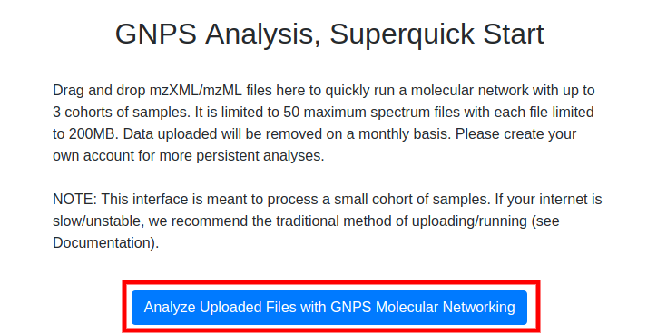

This is a superquick start guide that will enable you to analyze your data in the following ways without having to create an account or install any software besides your web browser and conversion software.
- Classic Molecular Networking - Analyze a few dozen samples in up to 3 cohorts
- Feature Based Molecular Networking - Analyze with Molecular Networks out of your favorite feature detection software
The limitations to this method is that the files uploaded will not reside in your own account (though no one else can see them) and will eventually disappear from GNPS.
Classic Molecular Networking
Please navigate to the super quickstart page to begin with Classic Molecular Networking!
Converting Data
Convert vendor formats to open formats using MSConvert locally. Checkout this documentation.
Selecting Files
Simply drag and drop your mass spectrometry files (mzML, mzXML, or mgf) into the appropriate cohorts you want to compare. Files are required to be uploaded to Cohort Group 1.
Analyze Files
Once files have been uploaded into the appropriate cohort, enter your email and click the "Analyze Uploaded Files with GNPS Molecular Networking" button.

This will bring you to a GNPS workflow status page. If you entered an email, you will receive an email once the analysis job is complete. If you did not enter an email, save the URL of the analysis as this is the only way for you to find analysis again.
Results
To understand the results, please refer to the analysis section of the standard quickstart guide.
Feature Based Molecular Networking
Please navigate to the super quickstart page to begin with Feature Based Molecular Networking!
Selecting Files
Simply drag and drop the files out of your feature finding tool:
- Feature Quantification Table
- Feature MS/MS MGF file
- Sample Metadata (Optional) - Format can be found here
- Additional Pairs Externally Generated (Optional) - Format pending
Analyze Files
Once files have been uploaded, enter your email and click the "Analyze Uploaded Files with GNPS Molecular Networking" button.
This will bring you to a GNPS workflow status page. If you entered an email, you will receive an email once the analysis job is complete. If you did not enter an email, save the URL of the analysis as this is the only way for you to find analysis again.
Results
To understand the results, please refer to the feature based molecular networking page.